山东部分非物质文化遗产
-
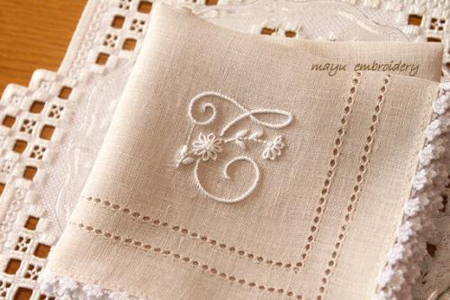
抽纱刺绣
抽纱是刺绣的一种，亦称“花边”。2014年11月11日，抽纱经国务院批准列入第四批国家级非物质文化遗产名录。 -
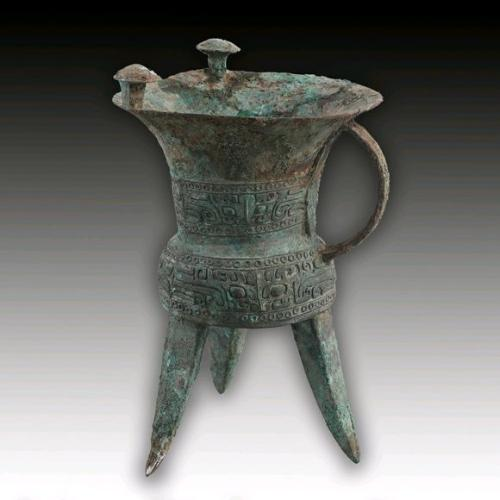
仿古青铜器
潍坊的仿古青铜器始于清代中叶，是一种仿造复制古代青铜器的工艺，为潍坊的特种工艺之一，在全国民间工艺中独树一帜。 -
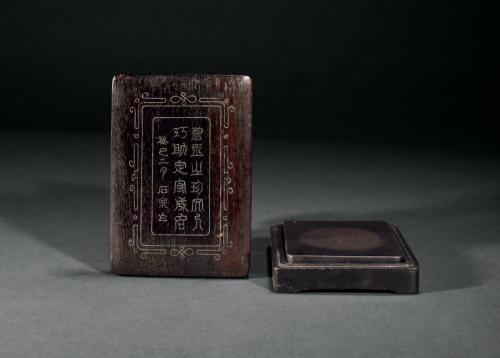
红木嵌银
潍坊红木嵌银漆器是山东潍坊特有的汉族传统手工艺品。工匠们为美化产品，扩大销路，便比照古代青铜器的金银错工艺(金银错，战国时代用金银嵌上装饰花纹的青铜器)，在一些铜器上镶嵌金银丝花纹。这就是最初的潍坊嵌银制品。 -
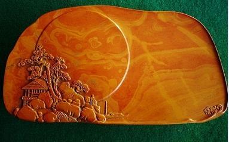
红丝砚
红丝砚是一种古老的传统手工艺品。以山东天然的红丝石为原料制作的石砚，早在唐宋即负盛名誉为诸砚之首。 -
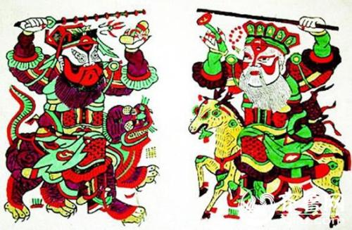
木版年画
潍坊木版年画是山东省历史悠久的传统民俗工艺品。始创于明末，全以手工操作并用传统方式制作，发展初期受到杨柳青年画的影响，清代光绪年间达到鼎盛期，有“画店百家，画种上千，画版数万”之说。 -
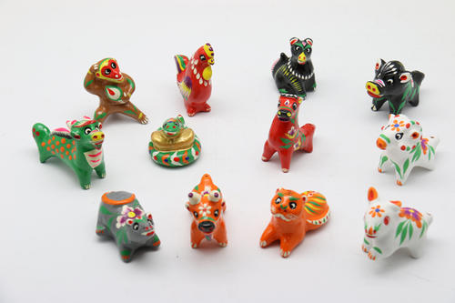
泥塑
聂家庄泥塑被称为高密三绝之一，是一种古老的传统民间艺术，作为山东省高密市聂家庄生产的泥玩具。相传始于明代隆庆、万历年间。2012年，聂家庄泥塑入选第四批国家级非遗项目。 -
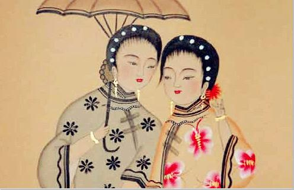
扑灰年画
扑灰年画是中国历史悠久的汉族传统民间艺术形式，潍坊高密地区汉族民间年画中的一个古老画种。所谓扑灰，即用柳枝烧灰，描线作底版，一次复印多张。艺人继而在印出的稿上粉脸、手，敷彩，描金，勾线，最后在重点部位涂上明油即成。 -
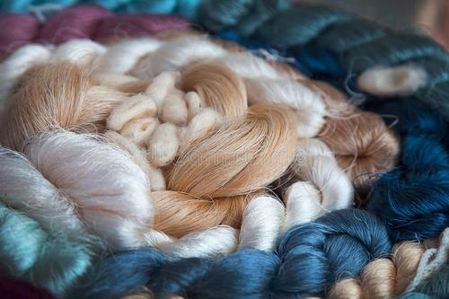
手织丝绸
丝绸是指茧绸，即柞绸，又称山东绸或鲁绸。是一种古老的中国传统织造工艺。 -
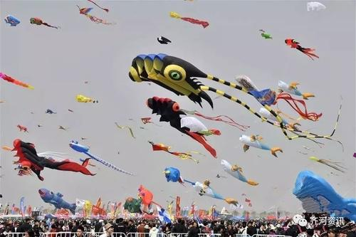
潍坊风筝
潍坊是世界风筝的发源地，历史悠久，工艺精湛。潍坊风筝是非物质文化遗产之一，现在世界上70%以上的风筝都是出口自潍坊。2006年5月，潍坊风筝被列入第一批国家级非物质文化遗产名录。 -
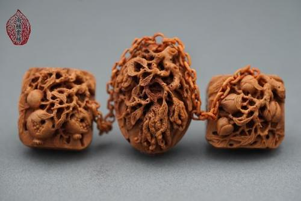
潍坊核雕
潍坊核雕大约始于清末，并于本世纪初时在巴拿马博览会上获奖。它主要是用桃核为材料，并巧妙地利用桃核上的自然麻纹雕出各种生动的景物，如山水、花鸟、人物及车船、首饰印章等优秀作品。 -
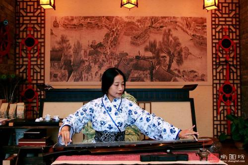
诸城古琴
诸城派古琴是中华民族最早的拨弦乐器之一，是中国最古老、最具生命力的民间艺术形式。2003年11月7日，联合国教科文组织宣布了第二批“人类口头和非物质遗产代表作”，中国的古琴艺术名列其中。